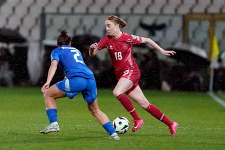
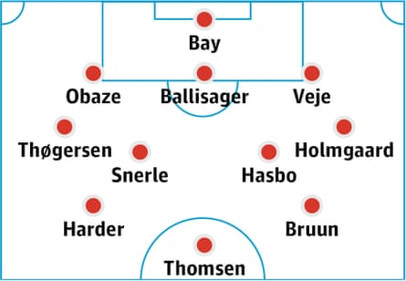

This article is part of the Guardian’s Euro 2025 Experts’ Network , a cooperation between some of the best media organisations from the 16 countries who qualified. theguardian.com is running previews from two teams each day in the run-up to the tournament kicking off on 2 July.
Overview
Everything was going fine for Denmark in the buildup. There weren’t too many injury worries or key players retiring. Results had been decent – until the last Nations League game against Sweden. With everything to play for, Denmark not only lost the match that could have secured them a first-place finish in League A for the first time – they were demolished 6-1 by the side they are playing in their first game at Euro 2025. “I’ve been part of this team for many years but I think this is the worst I’ve experienced,” the midfielder Sanne Troelsgaard told Aftonbladet after the game. “We need to take a good look at ourselves.”
That disappointment will cast a shadow over Denmark’s hopes, but there is still optimism. Qualifying for the tournament was impressive, including getting close to a famous result in Spain: Andrée Jeglertz’s side were 2-0 up after 72 minutes in Tenerife, but ultimately lost 3-2.
The Czech Republic and Belgium posed few problems and with an attacking, possession-based style, hopes of a silver-summer a la 2017 have been reignited. “Naturally, we dream of winning medals, and we will give everything to create an unforgettable red-and-white summer together with the Danish fans,” said the captain and star striker Pernille Harder.
This will be the first, and only, major tournament under the Swedish head coach Jeglertz, and he has a few tactical puzzles to solve. Firstly, Denmark won’t have played another match before heading to Switzerland, meaning that 6-1 defeat is the last outing before they face Sweden again. Secondly, question marks remain over the preferred starting XI – particularly the right-sided position in the back three, as well as the right wing-back role, both still up for grabs.
The coach
Andrée Jeglertz has been in charge of Denmark since autumn 2023, when he replaced Lars Søndergaard after the last-16 exit from the World Cup. His contract runs out in the summer and he has made it clear he does not want to extend it. A return to club football beckons. Jakob Michelsen will take over after the tournament, inheriting a squad that Jeglertz has shaped to compete with – and on their day beat – the best. Born in Malmö, Jeglertz managed several top clubs in Sweden, including leading Umeå to a Champions League title in 2004. He also spent six years as head coach of Finland women.
Star player
Pernille Harder will go down as one of the greatest players in Danish football history. The all-time top scorer is an icon and an inspiration for countless girls and boys across the country. “She’s a legend and it’s a huge honour to be allowed to play alongside her,” the goalkeeper Maja Bay Østergaard has said. “She’s simply a world-class star.” Jeglertz agrees: “She’s not just a player, but a great role model … in everything she does,” he told Bold.dk. Harder is an eight-time Danish player of the year, two-time Uefa Women’s Player of the Year and twice a winner of The Guardian’s Top 100 .
One to watch
Sara Holmgaard has enjoyed a standout season at Everton, voted women’s player of the season by her teammates. Scoring an Olimpico goal [direct from a corner] and setting up others, she’s been a constant threat down the left. After such an impressive campaign it’s no surprise that bigger clubs have taken noticeand made her a target this summer. And it’s not just at club level where she’s made her mark – Holmgaard has also cemented herself as Denmark’s first-choice left wing-back, edging out Sofie Svava of Lyon.
Sara Holmgaard on the move in the qualifying match aganst Italy in February.Photograph: SPP /Alamy
Probable lineup
Status of domestic top flight
The Danish league is on the rise. The major broadcaster TV 2 has acquired the rights from next season, and some of the biggest clubs in the men’s game, such as FC Copenhagen and FC Midtjylland, are slowly climbing up the divisions, helping to attract bigger crowds and more sponsors. Despite this, however, Fortuna Hjørring remained the team to beat in 2024-25, proving unstoppable and winning the double. While it remains largely semi-professional, with most of the best Danish players playing abroad, progress is being made. Brøndby, for example, became the first club to go fully professional last winter.
Realistic aim in Switzerland
Denmark have the quality to beat anyone, and their ambition is to advance from the group stage. But Sweden and Germany look stronger, and for that reason, the group stage will most likely mark the end of the road.
The Denmark team guide was written by Sofie Engberg Munch for TV 2 Denmark .